thrivalist
images
the valley of stacking functions
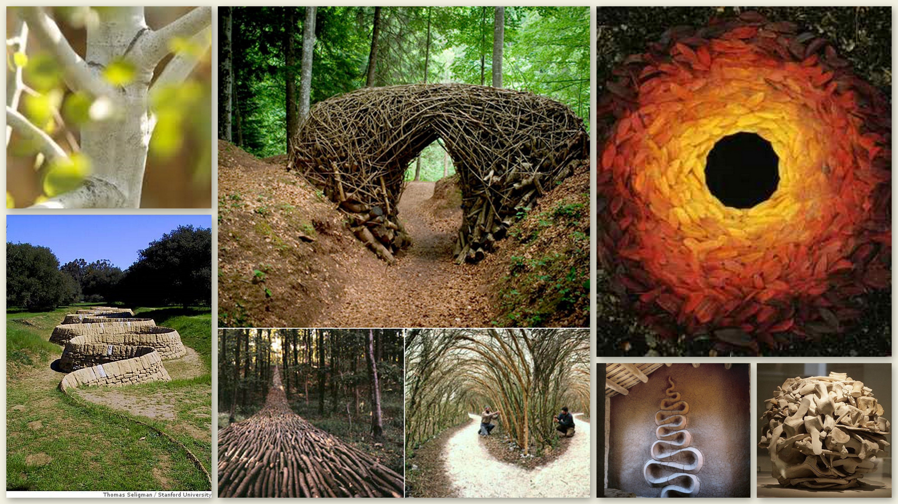
fully alive
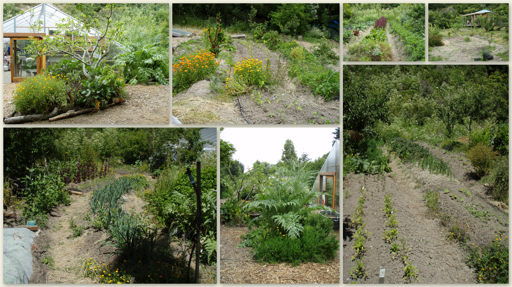
four legged thrivealists
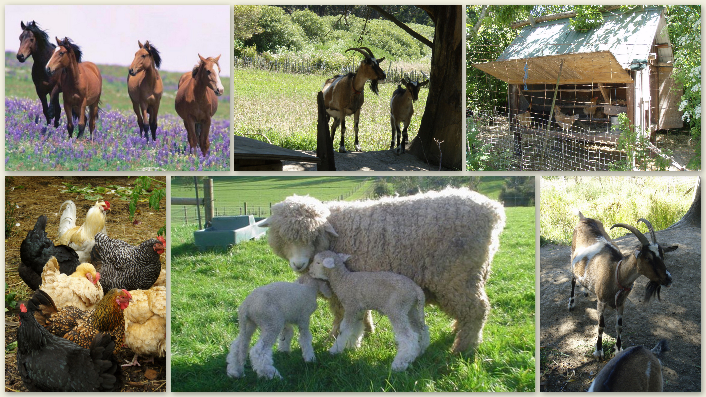
from earth to art
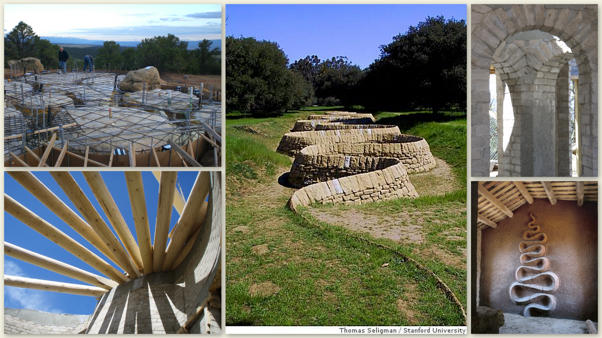
water the living flow
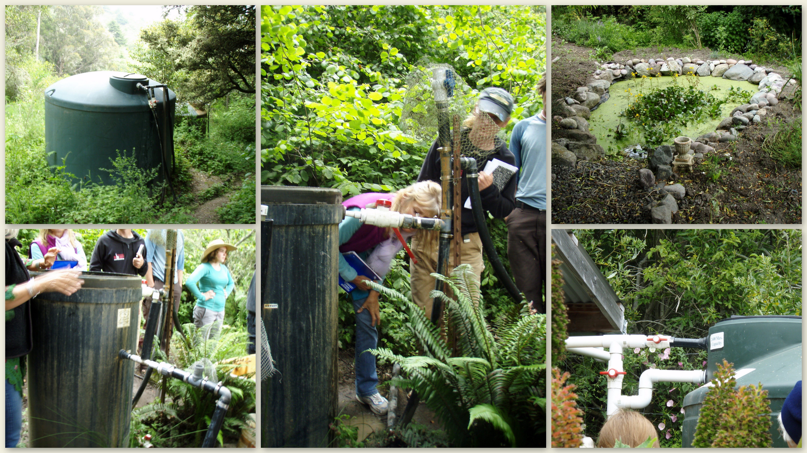
chooks
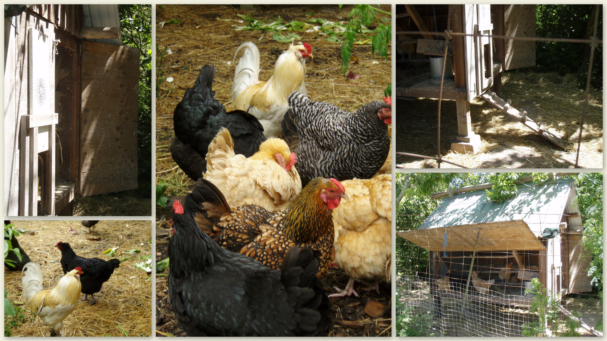
all things fully alive
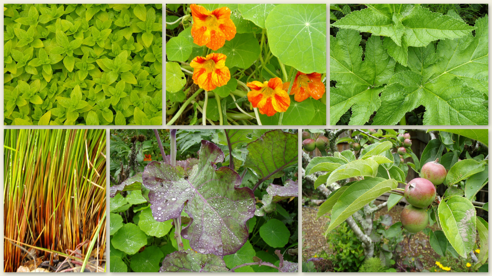
cleansing at the edge of zone 5
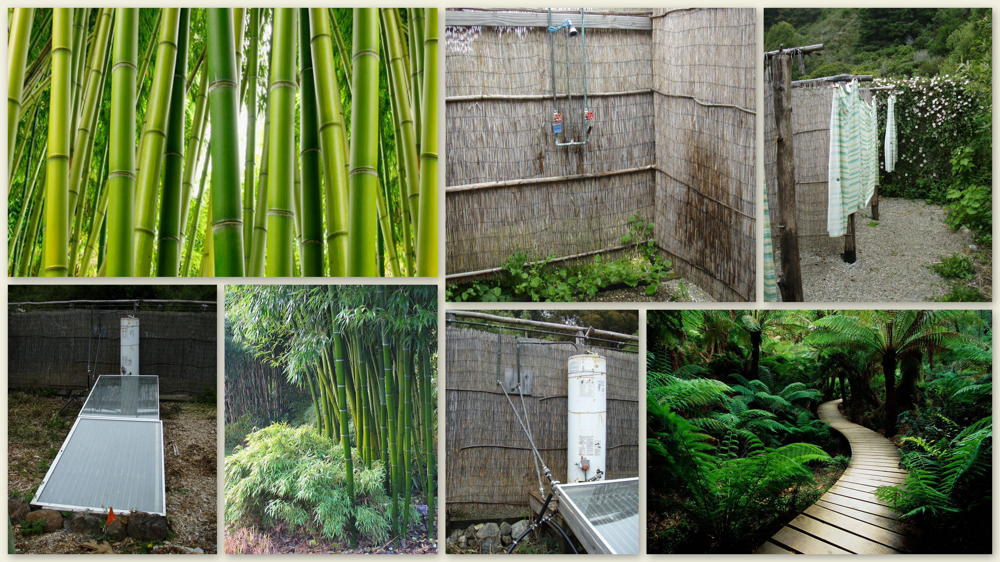
west valley ancestral land
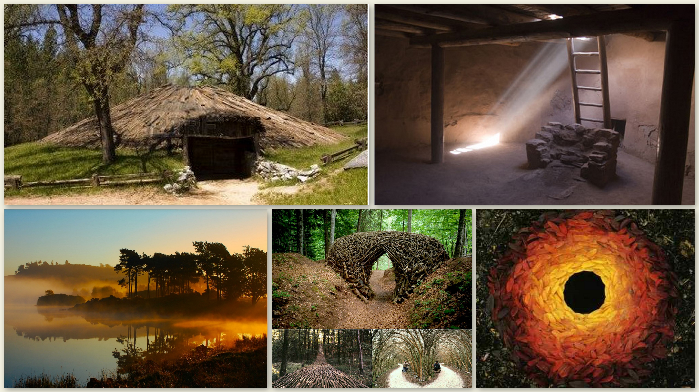
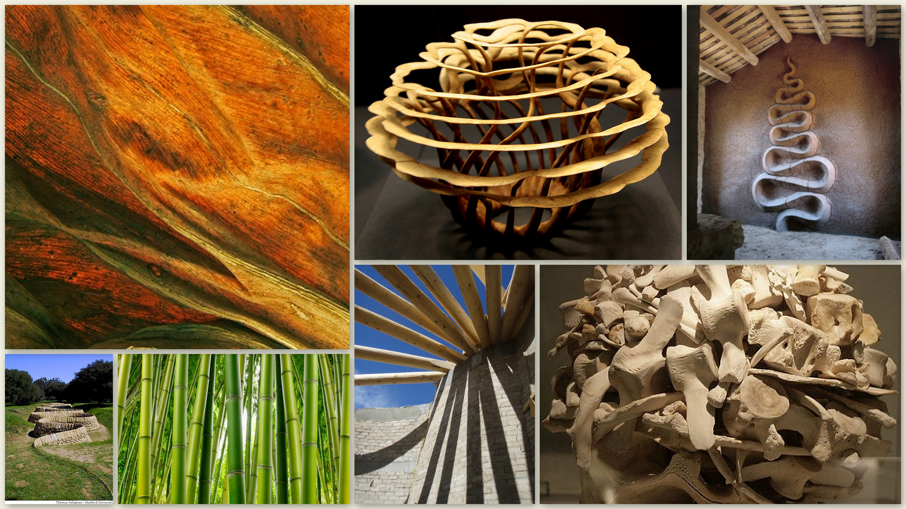
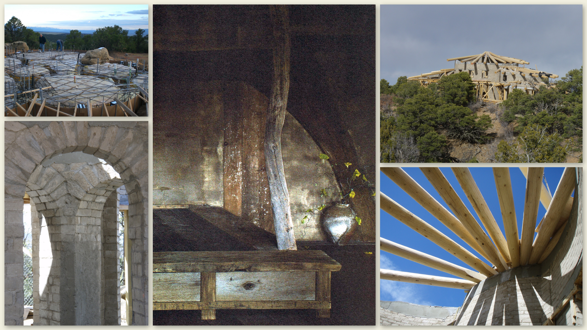